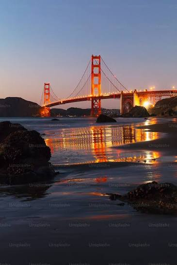
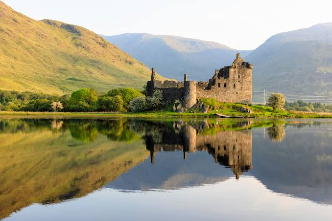

A field guide to places that don't exist...
All from Amanda's imaginations...beyond the familiar
Stories, places and little discoveries from a world waiting to be explored
Explore reallyyyy cool destinationsSomewhere along the edge of the known world
THREE PLACES, THREE STORIES, THREE WONDERS (three everything...lol)
Somewhere worth getting lost
Every place has a story. These are only just a few places to begin

